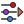
Parametric to the core
Your structural model is a Grasshopper definition. Move a slider and the geometry, the mesh, the analysis and the results all follow.
Alpaca4d connects Rhino and Grasshopper to OpenSees, the finite element engine from UC Berkeley (subject to its own license). Model beams, shells and solids, run static, modal, buckling and earthquake analyses, and explore hundreds of design options, without writing a line of code.
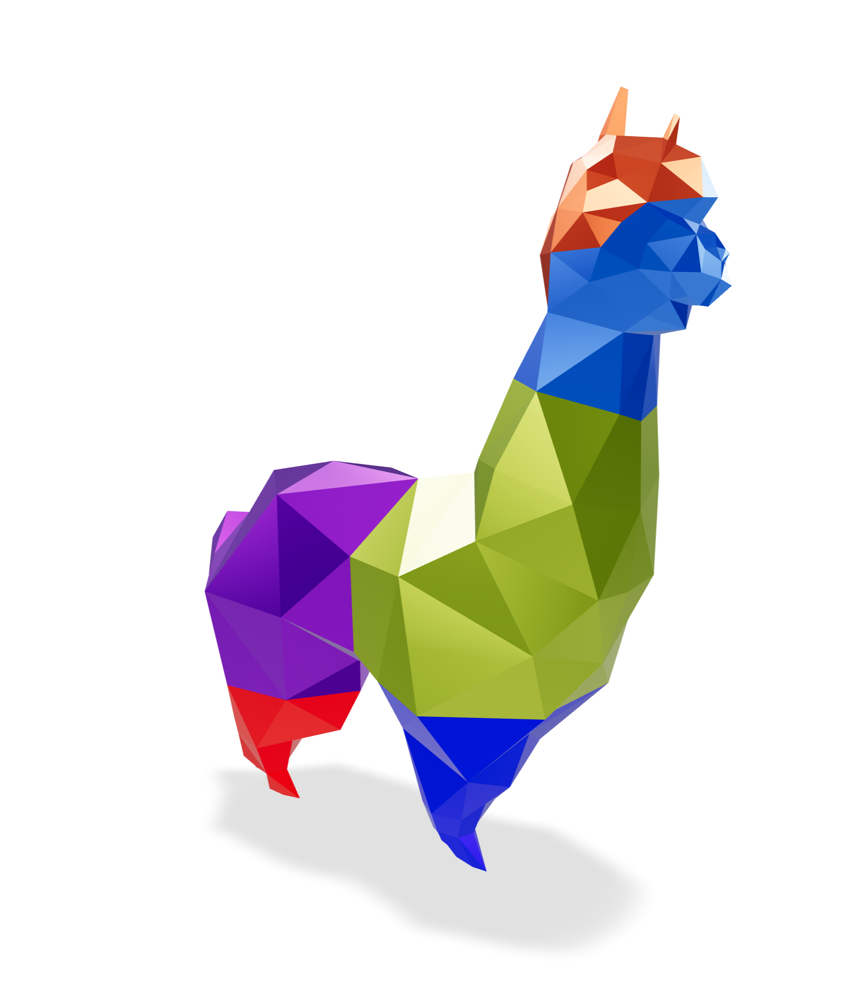

Your structural model is a Grasshopper definition. Move a slider and the geometry, the mesh, the analysis and the results all follow.
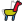
Alpaca4d writes plain OpenSees input and runs the open-source engine from UC Berkeley: nonlinear materials, fibre sections, dynamics. You never touch Tcl, and the file is always yours.
Record design studies with Explorer, search them with Non-Linear Optimisation, and let Topology Optimisation carve away what a solid does not need.
Scroll to model, support, load and analyse a concrete shell, then explore a whole family of them.
Turn the curves, surfaces, meshes and solids you already have into beams, shells, bricks and tetrahedra. Assemble Model welds them into one structure.
Fix the corners, tie floors together with rigid diaphragms and links. Apply gravity, point, beam and shell loads, masses and ground motions, grouped in load patterns.
Alpaca4d writes a plain OpenSees file and Run Analysis solves it with the OpenSees on your computer: static, nonlinear, modal, buckling or time history. The results land back on your geometry.
Every slider is a design variable. Record hundreds of options with Explorer, let Non-Linear Optimisation search for the best, or let Topology Optimisation find where the material belongs.
No scripting and no new interface. Materials flow into sections, sections into elements, elements into a model, and the model into OpenSees, one wire at a time.
01 MATERIALPick a grade from the library, or type in your own values.
02 SECTIONStandard profiles, a steel library, or any shape you draw.
03 ELEMENTBeams, shells, bricks and tetrahedra, straight from Rhino geometry.
04 ASSEMBLEOne model: nodes welded, supports and loads in place.
05 ANALYSEOpenSees solves it, on your own machine.
06 VIEWContours, diagrams and legends, right in the Rhino viewport.
From the first material to the last optimisation run. Every component is documented, with its inputs, outputs and a picture.
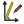
Elastic, uniaxial and nD materials, plus a material library to pick grades from.
Rectangular, circular, hollow, I, double angle and generic sections, a steel section library and plate fibre sections.
Force-based beam-columns, beams with hinges, hinge releases and spring links.
ASDShellQ4 and ASDShellT3 shells, with elastic or plate fibre sections.
SSP bricks and ten-node tetrahedra for anything with a volume, from a footing to a concrete cow.
Supports with any mix of fixities, rigid diaphragms, rigid links and equal DOF.
Gravity, point, beam and shell loads, mass points, load patterns and time series.
Static and nonlinear analysis, with control over integrator, convergence test, steps and damping.
Natural vibration modes, ground-motion time histories and linear buckling.
Displacements, reactions, forces and stresses, as numbers or as contours, diagrams, legends and principal stress lines.
Moment–curvature, N–My–Mz interaction domains and utilisation checks to EN 1993-1-1.
Explorer design studies, Non-Linear Optimisation and Topology Optimisation.
Need more? Write your own OpenSees commands with Custom Code, open up any object with Deconstruct, or send the model on to FEM-Design.
Every picture here comes from an example in the docs, with its Grasshopper file ready to download, open and take apart.
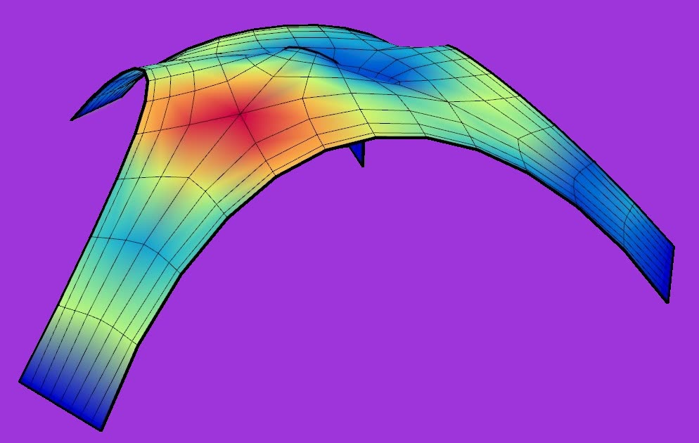
Compressed ShellKangaroo form-finding, then shells→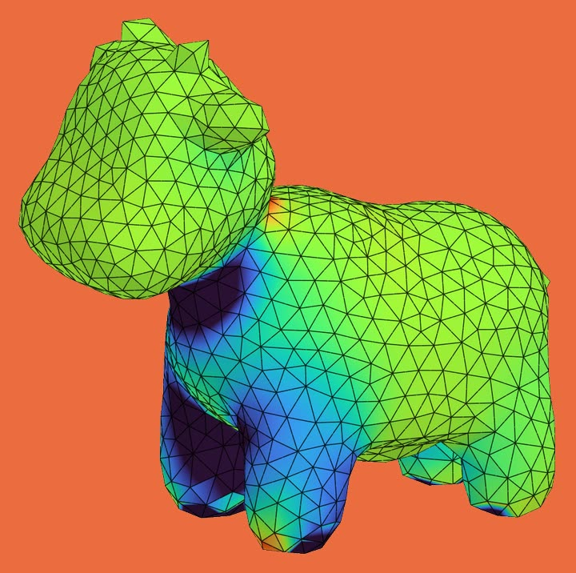
Spot the Cow5 030 ten-node tetrahedra→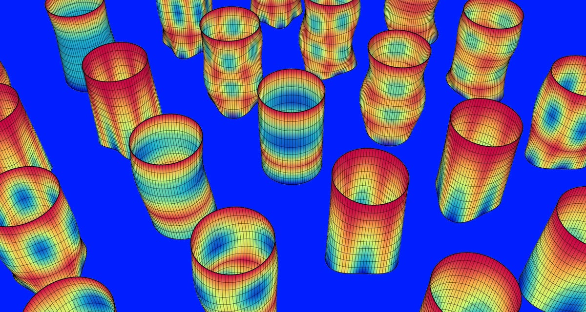
Natural VibrationMode shapes and frequencies→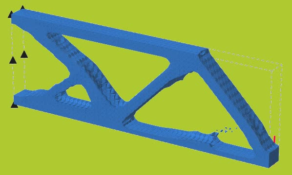
Topology OptimisationMaterial only where it works→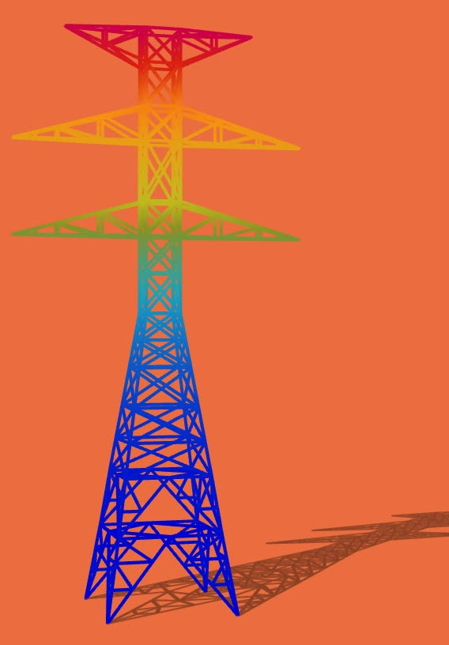
High Tension TowerA lattice of beam elements→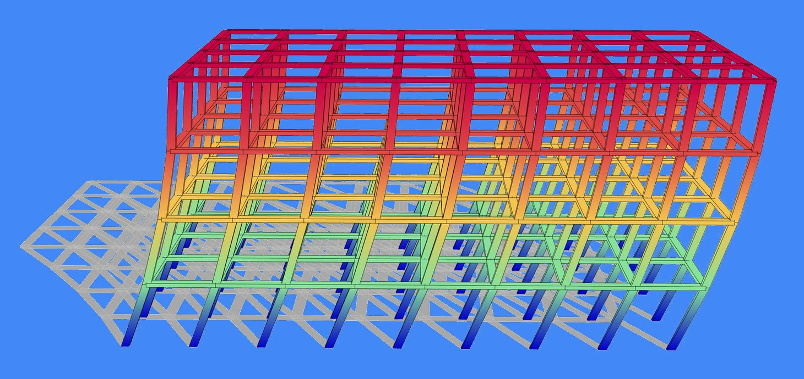
Multi Storey BuildingBeams, columns, slabs, diaphragms→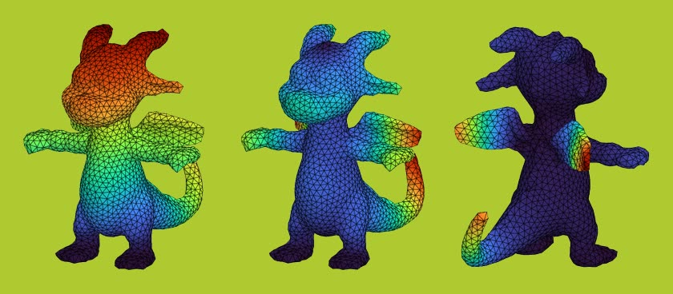
Inigo the DragonSways, wags its tail, flaps its wings→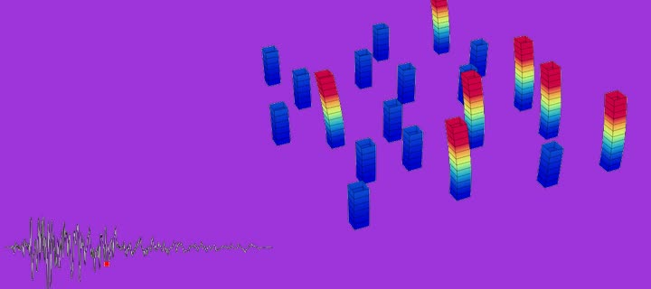
EarthquakeNonlinear dynamics→Placeholder: a quote from an engineer at a practice. What they modelled with Alpaca4d, and what it changed in their work.
Placeholder: a quote from a researcher or teacher. How Alpaca4d is used in a course, a thesis or a paper.
Placeholder: a quote from an architect or a student. The design question Alpaca4d helped them answer.
Find Alpaca4d in Rhino's Package Manager and click Install. Rhino 7 and 8, on Windows and macOS.
Download OpenSees from UC Berkeley (subject to its own license) and point Alpaca4d at it once. OpenSees is the engine; Alpaca4d is the cockpit.
Every component explained, with its inputs, outputs and a picture.
Read the docsGrasshopper files to open, run and take apart, from beams to dragons.
Open the examplesA day online with the developer, from your first model to its results.
See the programmeA web app for design studies: filter, compare and pick a design, in your browser.
Open Explorer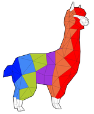
Download Alpaca4d and analyse your first model this afternoon. Free for models of up to 50 elements.